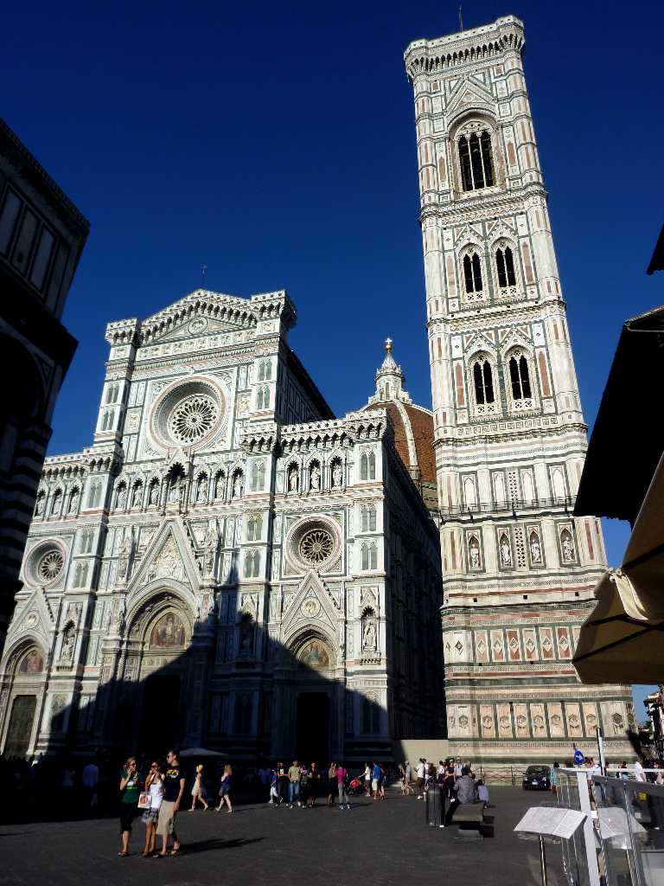
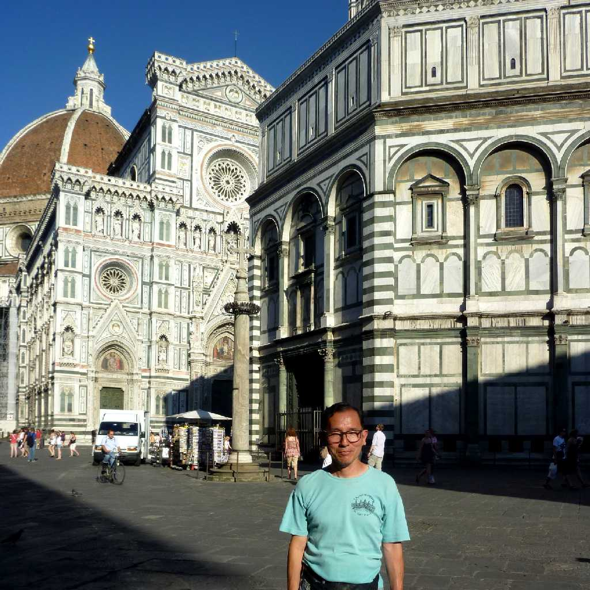

Cattedrale di Santa Maria del Fiore Firenze
フィレンチェのシンボル花の聖母と名付けられた 大聖堂 鐘楼 洗礼堂 からなる １３９６年から１４０年かけて創られた大聖堂は石積み建築のドームとしては今でも世界最大 美しい鐘楼はジョット作 サンジョバンニ洗礼堂は最も古く１１世紀に創られた

June 26 2011 Cattedrale di Santa Maria del Fiore